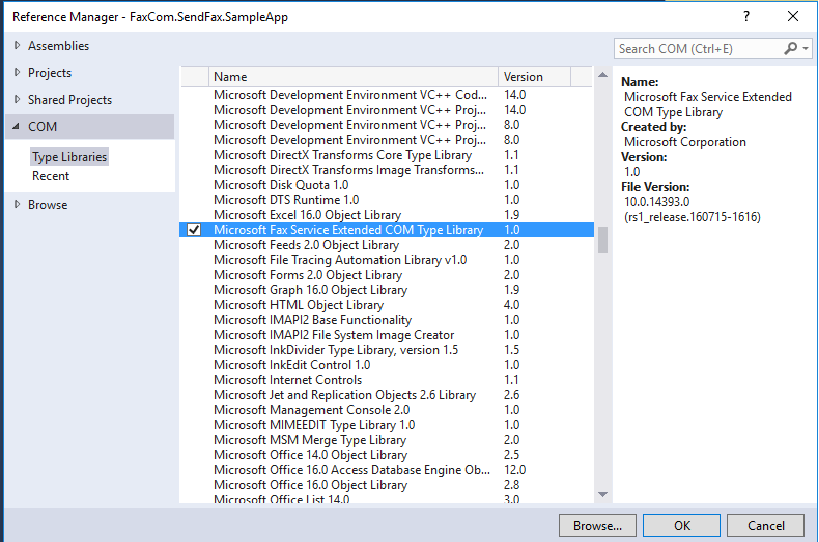
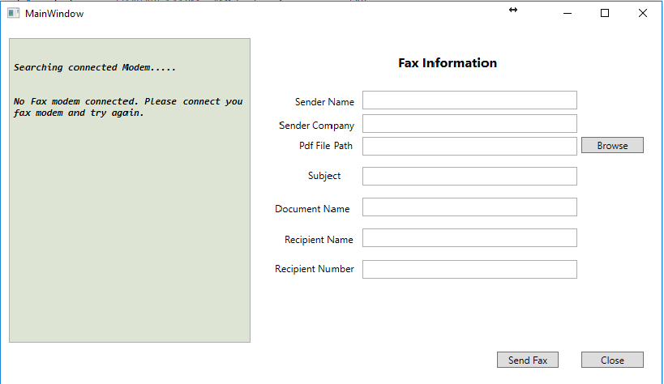

C# Send Fax using fax Modem
Sending Fax
faxcom library can send fax. Although interfax create a list of problem for faxcoblib
I think if you follow my instruction there will be no problem for sending fax.
Description
How add faxcomlib on your project
In my sample i have use 4 extra dll
Interop.FAXCOMEXLib.dll
System.Management.dll
System.Management.Instrumentation.dll
System.Windows.Interactivity.dll
all of them you will find out on Package DLL folder.
if you want to add faxcomlib from your visual studio.

if you run the sample you can see the fax status runtime on the left hand side and fax information on the right hand side.

preparing document
private void FaxDocumentSetup()
{
faxDoc = new FaxDocument();
faxDoc.Priority = FAX_PRIORITY_TYPE_ENUM.fptHIGH;
faxDoc.ReceiptType = FAX_RECEIPT_TYPE_ENUM.frtNONE;
faxDoc.AttachFaxToReceipt = true;
CheckFileIsNotInUse();
faxDoc.Sender.Name = FaxObj.SenderName;
faxDoc.Sender.Company = FaxObj.SenderCompany;
faxDoc.Body = FaxObj.FaxBodyPath;
faxDoc.Subject = FaxObj.FaxSubject;
faxDoc.DocumentName = FaxObj.FaxDocumentName;
faxDoc.Recipients.Add(FaxObj.RecipientFaxNumber, FaxObj.RecipientName);
}
private void PrintFaxStatus(FaxJobStatus faxJobStatus)
{
this.Dispatcher.Invoke((Action)(() =>
{
if (faxJobStatus.ExtendedStatusCode == FAX_JOB_EXTENDED_STATUS_ENUM.fjesRECEIVING)
{
faxStatusTextBox.Document.Blocks.Add(new Paragraph(new Run("The device is receiving a fax." + Environment.NewLine)));
}
if (faxJobStatus.ExtendedStatusCode == FAX_JOB_EXTENDED_STATUS_ENUM.fjesPARTIALLY_RECEIVED)
{
faxStatusTextBox.Document.Blocks.Add(new Paragraph(new Run("The incoming fax was partially received. Some (but not all) of the pages are available." + Environment.NewLine)));
}
if (faxJobStatus.ExtendedStatusCode == FAX_JOB_EXTENDED_STATUS_ENUM.fjesNO_DIAL_TONE)
{
faxStatusTextBox.Document.Blocks.Add(new Paragraph(new Run("The device has encountered a fatal protocol error. Please check your fax line connection." + Environment.NewLine)));
FindAndKillProcess("WFS");
return;
}
if (faxJobStatus.ExtendedStatusCode == FAX_JOB_EXTENDED_STATUS_ENUM.fjesNO_ANSWER)
{
faxStatusTextBox.Document.Blocks.Add(new Paragraph(new Run("The receiving device did not answer the call." + Environment.NewLine)));
FindAndKillProcess("WFS");
return;
}
if (faxJobStatus.ExtendedStatusCode == FAX_JOB_EXTENDED_STATUS_ENUM.fjesNOT_FAX_CALL)
{
faxStatusTextBox.Document.Blocks.Add(new Paragraph(new Run("The device received a call that was a data call or a voice call." + Environment.NewLine)));
FindAndKillProcess("WFS");
return;
}
if (faxJobStatus.ExtendedStatusCode == FAX_JOB_EXTENDED_STATUS_ENUM.fjesNONE)
{
faxStatusTextBox.Document.Blocks.Add(new Paragraph(new Run("No extended status value Fax Call None..." + Environment.NewLine)));
FindAndKillProcess("WFS");
return;
}
if (faxJobStatus.ExtendedStatusCode == FAX_JOB_EXTENDED_STATUS_ENUM.fjesLINE_UNAVAILABLE)
{
faxStatusTextBox.Document.Blocks.Add(new Paragraph(new Run("The device is not available because it is in use by another application." + Environment.NewLine)));
FindAndKillProcess("WFS");
return;
}
if (faxJobStatus.ExtendedStatusCode == FAX_JOB_EXTENDED_STATUS_ENUM.fjesINITIALIZING)
{
faxStatusTextBox.Document.Blocks.Add(new Paragraph(new Run("The device is initializing a call." + Environment.NewLine)));
}
if (faxJobStatus.ExtendedStatusCode == FAX_JOB_EXTENDED_STATUS_ENUM.fjesFATAL_ERROR)
{
faxStatusTextBox.Document.Blocks.Add(new Paragraph(new Run("The device has encountered a fatal protocol error: To resolve the issue please connect your modem driver and if required install driver software for your modem. If your are connecting your modem to this computer for the first time please restart your computer." + Environment.NewLine)));
FindAndKillProcess("WFS");
return;
}
if (faxJobStatus.ExtendedStatusCode == FAX_JOB_EXTENDED_STATUS_ENUM.fjesDISCONNECTED)
{
faxStatusTextBox.Document.Blocks.Add(new Paragraph(new Run("The sender or the caller disconnected the fax call." + Environment.NewLine)));
FindAndKillProcess("WFS");
return;
}
if (faxJobStatus.ExtendedStatusCode == FAX_JOB_EXTENDED_STATUS_ENUM.fjesCALL_DELAYED)
{
faxStatusTextBox.Document.Blocks.Add(new Paragraph(new Run("The device delayed a fax call because the sending device received a busy signal multiple times. The device cannot retry the call because dialing restrictions exist. (Some countries/regions restrict the number of retry attempts when a number is busy.)" + Environment.NewLine)));
FindAndKillProcess("WFS");
return;
}
if (faxJobStatus.ExtendedStatusCode == FAX_JOB_EXTENDED_STATUS_ENUM.fjesCALL_BLACKLISTED)
{
faxStatusTextBox.Document.Blocks.Add(new Paragraph(new Run("The device could not complete a call because the telephone number was blocked or reserved; emergency numbers such as 911 are blocked." + Environment.NewLine)));
FindAndKillProcess("WFS");
return;
}
if (faxJobStatus.ExtendedStatusCode == FAX_JOB_EXTENDED_STATUS_ENUM.fjesCALL_ABORTED)
{
faxStatusTextBox.Document.Blocks.Add(new Paragraph(new Run("The call was aborted." + Environment.NewLine)));
}
if (faxJobStatus.ExtendedStatusCode == FAX_JOB_EXTENDED_STATUS_ENUM.fjesBUSY)
{
faxStatusTextBox.Document.Blocks.Add(new Paragraph(new Run("The device encountered a busy signal." + Environment.NewLine)));
FindAndKillProcess("WFS");
return;
}
if (faxJobStatus.ExtendedStatusCode == FAX_JOB_EXTENDED_STATUS_ENUM.fjesDIALING)
{
faxStatusTextBox.Document.Blocks.Add(new Paragraph(new Run("The device is dialing a fax number." + Environment.NewLine)));
}
if (faxJobStatus.ExtendedStatusCode == FAX_JOB_EXTENDED_STATUS_ENUM.fjesHANDLED)
{
faxStatusTextBox.Document.Blocks.Add(new Paragraph(new Run("The fax service processed the outbound fax; the fax service provider will transmit the fax." + Environment.NewLine)));
}
if (faxJobStatus.ExtendedStatusCode == FAX_JOB_EXTENDED_STATUS_ENUM.fjesBAD_ADDRESS)
{
faxStatusTextBox.Document.Blocks.Add(new Paragraph(new Run("The device dialed an invalid fax number." + Environment.NewLine)));
}
if (faxJobStatus.ExtendedStatusCode == FAX_JOB_EXTENDED_STATUS_ENUM.fjesTRANSMITTING)
{
faxStatusTextBox.Document.Blocks.Add(new Paragraph(new Run("The device is sending a fax." + Environment.NewLine)));
}
if (faxJobStatus.Status == FAX_JOB_STATUS_ENUM.fjsCOMPLETED && faxJobStatus.ExtendedStatusCode == FAX_JOB_EXTENDED_STATUS_ENUM.fjesCALL_COMPLETED)
{
faxStatusTextBox.Document.Blocks.Add(new Paragraph(new Run("Fax is sent successfully" + Environment.NewLine)));
FindAndKillProcess("WFS");
}
if (faxJobStatus.ExtendedStatusCode == FAX_JOB_EXTENDED_STATUS_ENUM.fjesPROPRIETARY)
{
faxStatusTextBox.Document.Blocks.Add(new Paragraph(new Run("The ExtendedStatusCode property specifies a code describing the job's extended status." + Environment.NewLine)));
}
}));
}
private void PrintFaxStatus(FaxJobStatus faxJobStatus) { this.Dispatcher.Invoke((Action)(() => { if (faxJobStatus.ExtendedStatusCode == FAX_JOB_EXTENDED_STATUS_ENUM.fjesRECEIVING) { faxStatusTextBox.Document.Blocks.Add(new Paragraph(new Run("The device is receiving a fax." + Environment.NewLine))); } if (faxJobStatus.ExtendedStatusCode == FAX_JOB_EXTENDED_STATUS_ENUM.fjesPARTIALLY_RECEIVED) { faxStatusTextBox.Document.Blocks.Add(new Paragraph(new Run("The incoming fax was partially received. Some (but not all) of the pages are available." + Environment.NewLine))); } if (faxJobStatus.ExtendedStatusCode == FAX_JOB_EXTENDED_STATUS_ENUM.fjesNO_DIAL_TONE) { faxStatusTextBox.Document.Blocks.Add(new Paragraph(new Run("The device has encountered a fatal protocol error. Please check your fax line connection." + Environment.NewLine))); FindAndKillProcess("WFS"); return; } if (faxJobStatus.ExtendedStatusCode == FAX_JOB_EXTENDED_STATUS_ENUM.fjesNO_ANSWER) { faxStatusTextBox.Document.Blocks.Add(new Paragraph(new Run("The receiving device did not answer the call." + Environment.NewLine))); FindAndKillProcess("WFS"); return; } if (faxJobStatus.ExtendedStatusCode == FAX_JOB_EXTENDED_STATUS_ENUM.fjesNOT_FAX_CALL) { faxStatusTextBox.Document.Blocks.Add(new Paragraph(new Run("The device received a call that was a data call or a voice call." + Environment.NewLine))); FindAndKillProcess("WFS"); return; } if (faxJobStatus.ExtendedStatusCode == FAX_JOB_EXTENDED_STATUS_ENUM.fjesNONE) { faxStatusTextBox.Document.Blocks.Add(new Paragraph(new Run("No extended status value Fax Call None..." + Environment.NewLine))); FindAndKillProcess("WFS"); return; } if (faxJobStatus.ExtendedStatusCode == FAX_JOB_EXTENDED_STATUS_ENUM.fjesLINE_UNAVAILABLE) { faxStatusTextBox.Document.Blocks.Add(new Paragraph(new Run("The device is not available because it is in use by another application." + Environment.NewLine))); FindAndKillProcess("WFS"); return; } if (faxJobStatus.ExtendedStatusCode == FAX_JOB_EXTENDED_STATUS_ENUM.fjesINITIALIZING) { faxStatusTextBox.Document.Blocks.Add(new Paragraph(new Run("The device is initializing a call." + Environment.NewLine))); } if (faxJobStatus.ExtendedStatusCode == FAX_JOB_EXTENDED_STATUS_ENUM.fjesFATAL_ERROR) { faxStatusTextBox.Document.Blocks.Add(new Paragraph(new Run("The device has encountered a fatal protocol error: To resolve the issue please connect your modem driver and if required install driver software for your modem. If your are connecting your modem to this computer for the first time please restart your computer." + Environment.NewLine))); FindAndKillProcess("WFS"); return; } if (faxJobStatus.ExtendedStatusCode == FAX_JOB_EXTENDED_STATUS_ENUM.fjesDISCONNECTED) { faxStatusTextBox.Document.Blocks.Add(new Paragraph(new Run("The sender or the caller disconnected the fax call." + Environment.NewLine))); FindAndKillProcess("WFS"); return; } if (faxJobStatus.ExtendedStatusCode == FAX_JOB_EXTENDED_STATUS_ENUM.fjesCALL_DELAYED) { faxStatusTextBox.Document.Blocks.Add(new Paragraph(new Run("The device delayed a fax call because the sending device received a busy signal multiple times. The device cannot retry the call because dialing restrictions exist. (Some countries/regions restrict the number of retry attempts when a number is busy.)" + Environment.NewLine))); FindAndKillProcess("WFS"); return; } if (faxJobStatus.ExtendedStatusCode == FAX_JOB_EXTENDED_STATUS_ENUM.fjesCALL_BLACKLISTED) { faxStatusTextBox.Document.Blocks.Add(new Paragraph(new Run("The device could not complete a call because the telephone number was blocked or reserved; emergency numbers such as 911 are blocked." + Environment.NewLine))); FindAndKillProcess("WFS"); return; } if (faxJobStatus.ExtendedStatusCode == FAX_JOB_EXTENDED_STATUS_ENUM.fjesCALL_ABORTED) { faxStatusTextBox.Document.Blocks.Add(new Paragraph(new Run("The call was aborted." + Environment.NewLine))); } if (faxJobStatus.ExtendedStatusCode == FAX_JOB_EXTENDED_STATUS_ENUM.fjesBUSY) { faxStatusTextBox.Document.Blocks.Add(new Paragraph(new Run("The device encountered a busy signal." + Environment.NewLine))); FindAndKillProcess("WFS"); return; } if (faxJobStatus.ExtendedStatusCode == FAX_JOB_EXTENDED_STATUS_ENUM.fjesDIALING) { faxStatusTextBox.Document.Blocks.Add(new Paragraph(new Run("The device is dialing a fax number." + Environment.NewLine))); } if (faxJobStatus.ExtendedStatusCode == FAX_JOB_EXTENDED_STATUS_ENUM.fjesHANDLED) { faxStatusTextBox.Document.Blocks.Add(new Paragraph(new Run("The fax service processed the outbound fax; the fax service provider will transmit the fax." + Environment.NewLine))); } if (faxJobStatus.ExtendedStatusCode == FAX_JOB_EXTENDED_STATUS_ENUM.fjesBAD_ADDRESS) { faxStatusTextBox.Document.Blocks.Add(new Paragraph(new Run("The device dialed an invalid fax number." + Environment.NewLine))); } if (faxJobStatus.ExtendedStatusCode == FAX_JOB_EXTENDED_STATUS_ENUM.fjesTRANSMITTING) { faxStatusTextBox.Document.Blocks.Add(new Paragraph(new Run("The device is sending a fax." + Environment.NewLine))); } if (faxJobStatus.Status == FAX_JOB_STATUS_ENUM.fjsCOMPLETED && faxJobStatus.ExtendedStatusCode == FAX_JOB_EXTENDED_STATUS_ENUM.fjesCALL_COMPLETED) { faxStatusTextBox.Document.Blocks.Add(new Paragraph(new Run("Fax is sent successfully" + Environment.NewLine))); FindAndKillProcess("WFS"); } if (faxJobStatus.ExtendedStatusCode == FAX_JOB_EXTENDED_STATUS_ENUM.fjesPROPRIETARY) { faxStatusTextBox.Document.Blocks.Add(new Paragraph(new Run("The ExtendedStatusCode property specifies a code describing the job's extended status." + Environment.NewLine))); } })); }
You need to ensure 4 tings on your PC.
1. A Faxmodem with line. to check the modem status you can follow

2. Phone and Modem area code
3. Windows fax and scan service on.

4. Free adobe reader https://code.msdn.microsoft.com/C-Send-Fax-using-fax-Modem-357aca81/https://get.adobe.com/reader/
After completing these 4 steps if you run the application you will see modem information

After giving the fax information when you will click send fax button it will dial the fax number, sending fax and complete the send fax.


Thank you